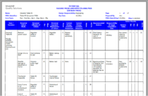
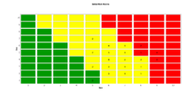

FMEA/FMECAs (Failure Mode and Effects Analyses/Failure Mode, Effects, and Criticality Analyses) represent one of the most commonly used tools in reliability assessment programs. In a survey published by the Reliability Analysis Center (RAC), 70% of respondents identified FMECA as one of the most important reliability tasks in use for reliability programs. Due to their flexible yet organized approach, it is easy to see why FMEAs are a tool of choice for many reliability professionals.
Because FMEAs can be approached and organized in a multitude of formats, they can easily be adapted to customer needs. Enabling the analyst to evaluate at a high level or at a very detailed level, FMEAs provide a valuable way to assess risk and to plan and organize an effective approach to address reliability issues. Additionally, FMEAs can be applied to a wide range of industries because they can be used to evaluate hardware systems, process control systems, and even human tasks in a Human Factors Process FMEA.
The basic components of a FMEA consist of some type of hierarchical breakdown, an outlining of all possible Failure Modes of all elements, and then a determination of the Effects of these failure modes. The power in FMEAs is realized when this analysis is extended to include information relating to the risk of these potential system failures. The idea is to be able to use a FMEA to assess which failure modes require effort to prevent, mitigate, detect, or ignore. This assessment of criticality in a FMEA lays the groundwork for an organized approach to risk management. By using FMEAs to assign and categorize failure modes, the resulting categories can each have a defined plan of action. For example, high risk items must be flagged, and a plan to eliminate or mitigate them formulated and deployed. Medium level items may require some type of detection mechanism to be designed. Low risk items perhaps require no action.
The issue then becomes how to adequately assess the risk levels of failure modes. There are some industry-adopted approaches to quantifying risk in FMEAs, as well as a number of user-defined approaches. Well-designed commercially available FMEA software will support any of these approaches to risk assessment. Four main approaches will be discussed here:
- Mode Criticality
- Risk Priority Number
- Criticality Rank
- Risk Level
Mode Criticality
Mode criticality is one of the more quantified methods used to analyze criticality. Mode criticality is a numerical value that can be calculated and applied to each failure mode. Mode criticalities are based on a FMECA approach defined in MIL-STD-1629, a commonly used FMECA methodology. Applied more easily in a hardware environment, mode criticalities are based on actual failure rate values. For example, if the failure rate of a component of the system is established in some manner, the analyst then assigns a mode percentage to each possible failure mode of the component. For example, if a component has two failure modes, perhaps one occurs 75% of the time, and the other occurs 25% of the time. (There are databases available to automate this task. They offer lists of failure modes for components and their associated mode percentages.)
Using this information, a mode failure rate can be calculated by multiplying the failure rate by the mode percentage. The analyst must also assess the failure effect probability, or the probability that the given failure effect is likely to occur. The equation for mode criticality is given by:
Risk Priority Number (RPN)
Risk Priority Numbers or RPNs are also numerical assessments of risk. RPNs are based on a FMEA approach adopted in FMEA methodologies such as those defined by SAE, AIAG, and Ford. RPN values range from 1 to 1000. To use RPNs, the analyst evaluates each failure mode and determines the Severity, Occurrence, and Detection level in each case. All three of these parameters are based on a 1-10 scale. A score of 10 indicates the most severe, most likely to occur, and least likely to be detected failure mode. The calculation of RPN is then defined as:
Risk Priority Number (RPN) = Severity * Occurrence * Detection
Because RPNs fall into a well-defined 1-1000 scale, analysts often break RPN values into various range levels. Items within the high risk range can then be addressed. Sometimes, a report of RPN values in a Pareto, color-coded format is useful.
Risk Level
Lastly, a risk level assessment technique is introduced in the book FMEA - Failure Modes & Effect Analysis - Predicting & Preventing Problems Before They Occur by Paul Palady. This approach allows the analyst to group failure modes into established categories to ensure that the most critical items are evaluated. A graphical representation is used, where the x axis is a specified risk value such as severity. The y axis is a secondary risk factor such as occurrence. The graph is broken into three distinct areas by lines that intersect both axes. By then graphing each failure mode, they will fall into one of the three graph areas: high, medium, or low.
Conclusion
Each technique has advantages, and a combination of approaches may be used as well. All methods feature a way to allow the FMEA analyst to gather failure mode information to ensure that the most significant failure modes are addressed. By using the organized framework of a FMEA to perform this assessment, you can have confidence that risk areas have been evaluated and quantified.
Additional information about Windchill FMEA (formerly Relex FMEA) and the risk assessment methods implemented in the software can be found by visiting www.crimsonquality.com/fmea.